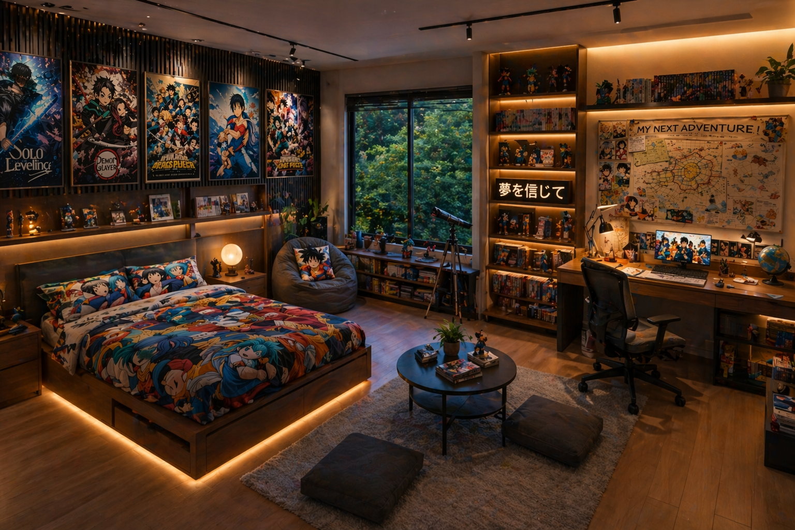

Your Quest Begins Here

This room is a vivid fusion of comfort, creativity, and passion—where the serene warmth of a modern retreat meets the electrifying spirit of anime culture. Rich wooden textures wrap the space in a cozy embrace, while soft, golden ambient lighting glows from beneath the bed frame and along the shelves, giving the entire room a cinematic, almost dreamlike atmosphere. A large window frames a lush, green outdoor view, grounding the room in calmness and providing a refreshing contrast to the energetic visuals within.
The walls are adorned with striking anime posters, each one bursting with color and personality, creating a gallery that celebrates storytelling, heroism, and imagination. Carefully arranged shelves display a curated collection of manga volumes, figurines, and collectibles, giving the room a sense of depth and personal identity—as if each item holds a story waiting to be told. The bed itself becomes a centerpiece, dressed in vibrant, character-themed bedding that instantly draws the eye and invites you into a world of fantasy and nostalgia.
Plan Your Journey
This room goes beyond aesthetics—it invites participation. The “My Next Adventure” board is more than decoration; it’s an interactive centerpiece designed to spark imagination and direction. Covered with maps, sketches, and notes, it encourages you to plan your next real-world trip or craft your own fictional universe. Whether you’re mapping out travel destinations or outlining the chapters of a manga-inspired story, this space empowers you to think like a creator.
At the desk, you’ll find high-quality journals and drawing tools ready for use, making it easy to sketch characters, design worlds, or jot down ideas as they come. The environment naturally fuels creativity, offering both inspiration and the means to bring your visions to life. Nearby, a telescope by the window adds another layer of exploration, inviting you to gaze at the stars and reflect on possibilities beyond the room.
Every detail here is intentional—from the lighting to the layout—crafted to immerse you in a world where relaxation and imagination coexist. It’s not just a place to unwind; it’s a space where you step into the role of the main character, ready to dream, create, and embark on your own unforgettable journey.